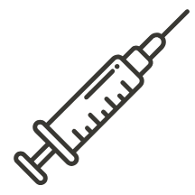
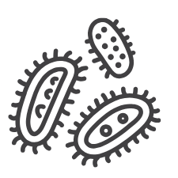
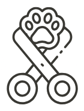
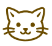

2 anos | Médio | Macho
Carinhoso
Carinhoso
Carinhoso
Carinhoso
Carinhoso
Carinhoso
Oliver tem 2 anos e é um gato curioso, daqueles que gostam de explorar cada cantinho como se fosse uma grande aventura. Desde filhote, ele demonstra um jeitinho esperto e ao mesmo tempo muito carinhoso. Ele adora a companhia das pessoas, seguindo pela casa ou apenas ficando por perto, observando tudo com seus olhos atentos. Seus momentos favoritos incluem cochilos em lugares aconchegantes e receber carinho, principalmente aquele atrás da orelha que faz ele relaxar completamente. Sociável e tranquilo, Oliver se adapta bem a novos ambientes e está sempre pronto para criar laços com quem oferece amor e cuidado. Adotar o Oliver é levar para casa um companheiro fiel, cheio de personalidade e pronto para fazer parte da sua história.

Saúde em dia

Vacinado

Vermifugado

Veterinário em dia

Castrado

Não reservamos animais.
A adoção é realizada por
ordem de interesse e mediante análise.
Não realizamos venda de animais.
Todos os pets disponíveis são
para adoção responsável.

Nosso objetivo é garantir que cada animal
encontre um lar seguro, cheio de amor e
cuidado.

Preencha o formulário de adoção para iniciar
o processo e dar ao Oliver a chance de encontrar
um novo lar cheio de carinho.